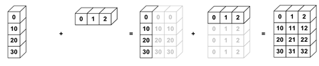

Vectorisation#

Broadcasting#
Broadcasting allows for operations with different shaped arrays.
It’s implemented in many libraries, such as NumPy and xarray.

import numpy as np
nums_col = np.array([0, 10, 20, 30]).reshape(4, 1)
nums_col
array([[ 0],
[10],
[20],
[30]])
nums_row = np.array([0, 1, 2])
nums_row
array([0, 1, 2])
nums_col + nums_row
array([[ 0, 1, 2],
[10, 11, 12],
[20, 21, 22],
[30, 31, 32]])
import xarray as xr
nums_col = xr.DataArray([0, 10, 20, 30], [("col", [0, 10, 20, 30])])
nums_col
<xarray.DataArray (col: 4)> Size: 32B array([ 0, 10, 20, 30]) Coordinates: * col (col) int64 32B 0 10 20 30
nums_row = xr.DataArray([0, 1, 2], [("row", [0, 1, 2])])
nums_row
<xarray.DataArray (row: 3)> Size: 24B array([0, 1, 2]) Coordinates: * row (row) int64 24B 0 1 2
nums_col + nums_row
<xarray.DataArray (col: 4, row: 3)> Size: 96B
array([[ 0, 1, 2],
[10, 11, 12],
[20, 21, 22],
[30, 31, 32]])
Coordinates:
* col (col) int64 32B 0 10 20 30
* row (row) int64 24B 0 1 2Vectorisation#
Vectorisation allows the code to operate on multiple array elements at once, rather than looping through them one at a time.
NumPy has many functions already vectorised for you, which have been optimised in C (i.e., they’ve been statically typed and compiled).
These are known as the universal functions (ufuncs).
There are many operations available, for maths (e.g., add and subtract), trigonometric (e.g., sin and cos), comparison (e.g., greater and less), and floating (e.g., isnan)
For example, instead of using +, you can use the equivalent ufunc np.add:
nums = np.arange(1_000_000)
%%timeit
[num + 2 for num in nums]
60.7 ms ± 147 µs per loop (mean ± std. dev. of 7 runs, 10 loops each)
%%timeit
nums + 2 # adds 2 to every element by overloading the + (similar to broadcasting)
140 µs ± 573 ns per loop (mean ± std. dev. of 7 runs, 10,000 loops each)
%%timeit
np.add(nums, 2)
140 µs ± 356 ns per loop (mean ± std. dev. of 7 runs, 10,000 loops each)
Question 1
If something doesn’t vary for a given loop, should it be inside or outside of that loop?
Create your own ufunc#
You can vectorise any arbitrary Python function to a NumPy ufunc using np.vectorize. Note that this is implemented using for loops, so doesn’t necessarily offer a large performance advantage.
Don’t worry about what this function does, just focus on the vectorisation bit.
import math
SQRT_2PI = np.float32((2.0 * math.pi) ** 0.5)
x = np.random.uniform(-3.0, 3.0, size=1_000_000)
mean = 0.0
sigma = 1.0
def my_function(x, mean, sigma):
"""Compute the value of a Gaussian probability density function at x with given mean and sigma."""
return math.exp(-0.5 * ((x - mean) / sigma) ** 2.0) / (sigma * SQRT_2PI)
vectorized_function = np.vectorize(my_function)
%%timeit
vectorized_function(x, mean, sigma)
355 ms ± 2.92 ms per loop (mean ± std. dev. of 7 runs, 1 loop each)
Question 2
Is it possible to run the unvectorised my_function directly on the same inputs (i.e., all of x)?
Generalised universal functions (gufuncs)#
Whereas ufuncs apply the function element-by-element, the generalized version (gufuncs) supports “sub-array” by “sub-array” operations.
Numba has a nice implementation of these, which we will explore in the next lesson.
Exercises#
Exercise 1
What is broadcasting?
Exercise 2
What is vectorisation?
Exercise 3
How would you replace the compute_reciprocals function below with a vectorised version?
def compute_reciprocals(array):
"""
Divides 1 by an array of values.
"""
output = np.empty(len(array))
for i in range(len(array)):
output[i] = 1.0 / array[i]
return output
big_array = np.random.randint(1, 100, size=1_000_000)
%timeit compute_reciprocals(big_array)
945 ms ± 4.78 ms per loop (mean ± std. dev. of 7 runs, 1 loop each)
Exercise 4
Create your own vectorised ufunc that calculates the cube root of an array over all elements.
Solutions#
Key Points#
Important
Take advantage of broadcasting for different shaped arrays.
Use vectorised functions where you can e.g., NumPy ufuncs.
Further information#
More information#
Other options#
-
Lazily loads metadata only, rather than eagerly loading data into memory.
Creates task graph of scheduled work awaiting execution (
.compute(), more on that in the Parallelisation lesson).